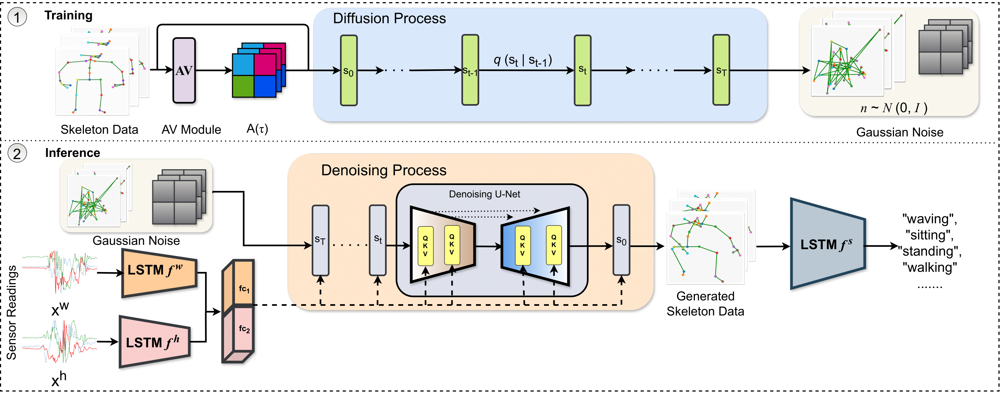
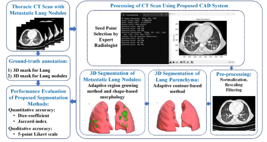
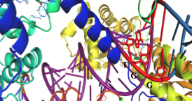
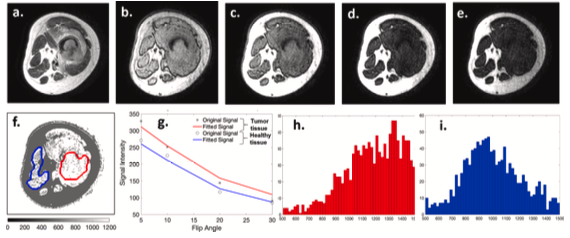
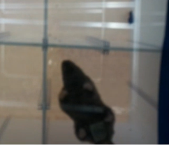
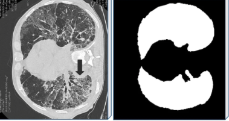

AI Projects
Showcasing my work in artificial intelligence, multimodal learning, and computer vision






AI & Technical Skills
Deep Learning
Computer Vision
Programming
Medical AI
Let's build AI-powered solutions together
Collaborate on cutting-edge AI research and development projects
Contact Me